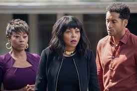

ACRIMONY
Acrimony is a 2018 American psychological thriller film produced, written, and directed by Tyler Perry. The film stars Taraji P. Henson, Lyriq Bent and Crystle Stewart, and follows a loyal wife who decides to take revenge on her ex-husband. Principal photography began in October 2016 in Pittsburgh.
WHERE is it playing
21 May 2021 at 14h00